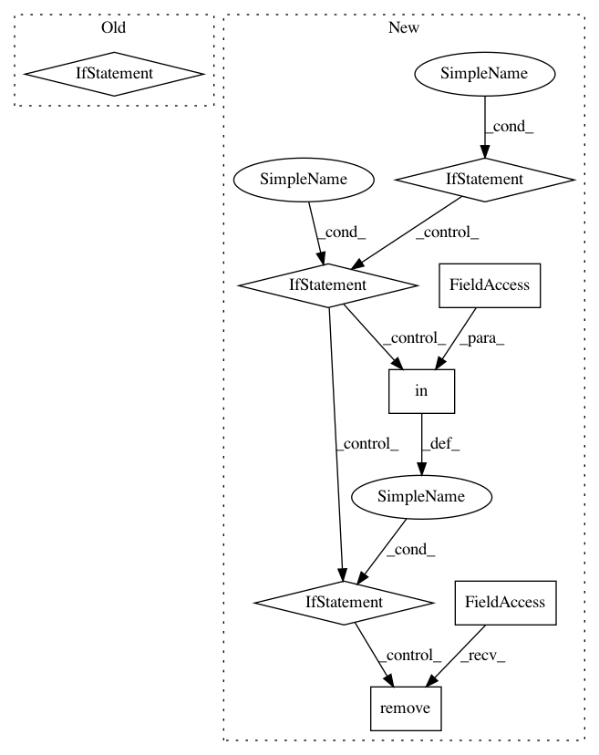

222747eeef01d05c4cd876e00929c8a8129486bd,Orange/widgets/data/owfile.py,OWFile,select_file,#OWFile#Any#,240
Before Change
recent = self.recent_paths[n]
del self.recent_paths[n]
self.recent_paths.insert(0, recent)
elif n:
self.browse_file(True)
if len(self.recent_paths) > 0:
After Change
recent = self.recent_paths[n]
del self.recent_paths[n]
self.recent_paths.insert(0, recent)
elif n:
path = self.file_combo.currentText()
if path == "Browse documentation data sets...":
self.browse_file(True)
elif os.path.exists(path):
self._add_path(path)
else:
valid, err = self.is_url_valid(path)
if valid:
_, filename = os.path.split(path)
recent = RecentPath(path, "url-datasets", filename)
if recent in self.recent_paths:
self.recent_paths.remove(recent)
self.recent_paths.insert(0, recent)
else:
self.error(0, err)
self.file_combo.removeItem(n)
In pattern: SUPERPATTERN
Frequency: 3
Non-data size: 8
Instances
Project Name: biolab/orange3
Commit Name: 222747eeef01d05c4cd876e00929c8a8129486bd
Time: 2015-10-16
Author: tankovesna@hotmail.com
File Name: Orange/widgets/data/owfile.py
Class Name: OWFile
Method Name: select_file
Project Name: GoogleCloudPlatform/PerfKitBenchmarker
Commit Name: 3d95ae5cd11987e4c963baf4da374b1fa139b807
Time: 2016-06-29
Author: carlos.torres@rackspace.com
File Name: perfkitbenchmarker/providers/openstack/os_virtual_machine.py
Class Name: OpenStackVirtualMachine
Method Name: _GetSchedulerHints
Project Name: flow-project/flow
Commit Name: c8d597f130b9b923d504366150b5609a1cf06b16
Time: 2017-07-07
Author: akreidieh@gmail.com
File Name: cistar-dev/cistar/core/base_env.py
Class Name: SumoEnvironment
Method Name: step